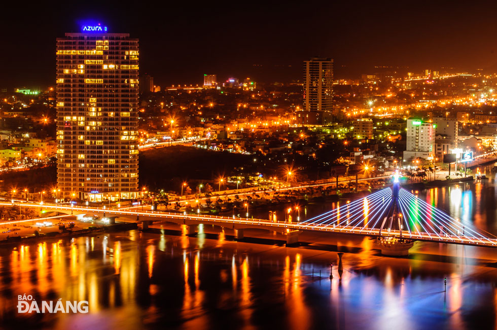
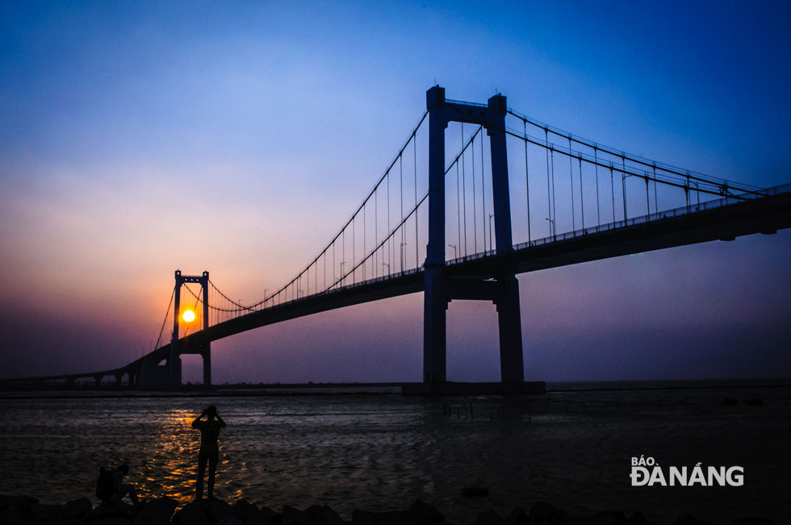
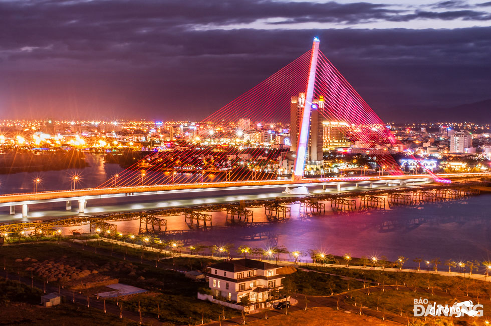
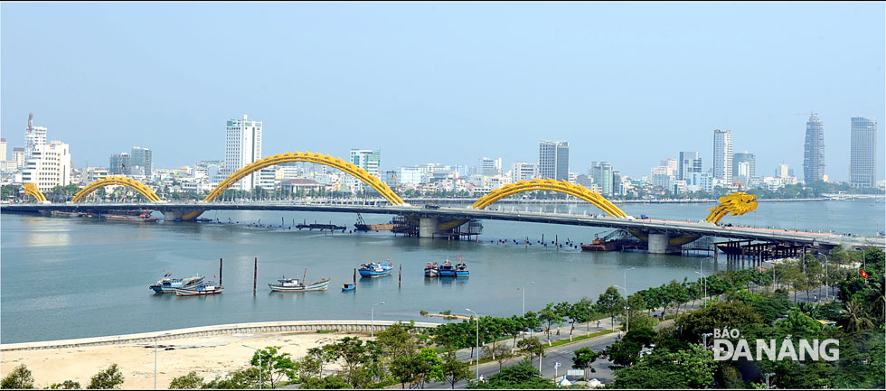
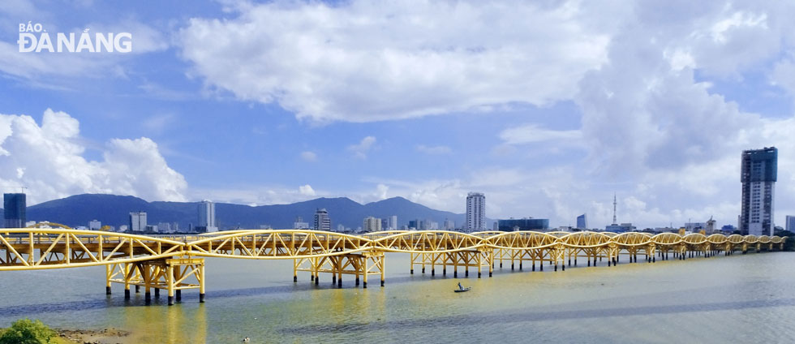
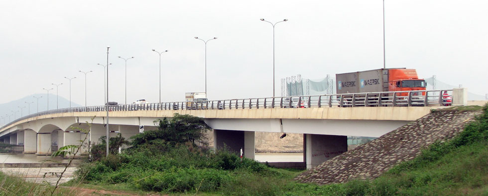
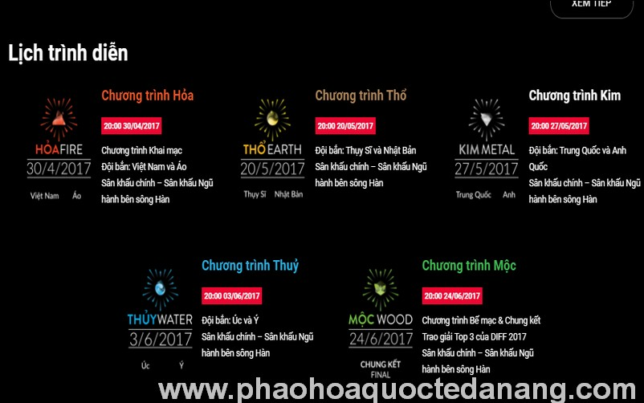
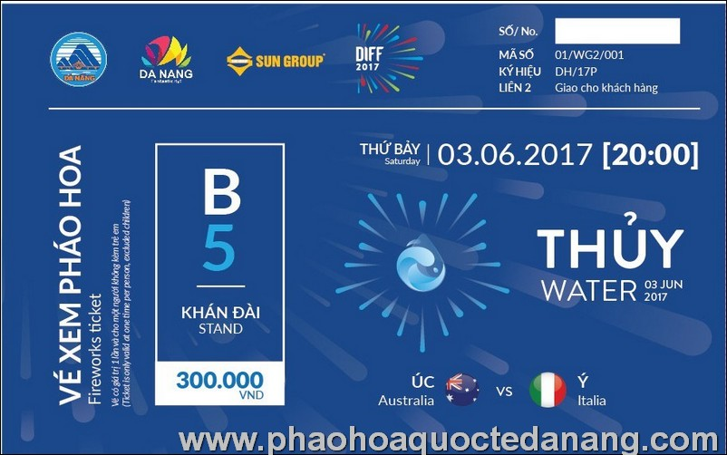
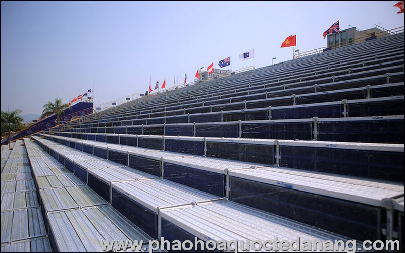

Đà Nẵng được mệnh danh là "thành phố của những cây cầu". Trong đó, nổi bật nhất là 6 cây cầu bắc qua đôi bờ sông Hàn là cầu Sông Hàn, cầu Thuận Phước, cầu Nguyễn Văn Trỗi, cầu Rồng, cầu Trần Thị Lý và cầu Tiên Sơn.
|  |
| Cầu Sông Hàn. |
Khánh thành vào năm 2000, cầu quay Sông Hàn Đà Nẵng được biết đến là cây cầu quay duy nhất còn hoạt động tại Việt Nam hiện nay. Cầu có chiều dài 487,7m và rộng 12,9m, nối liền hai trục đường chính của thành phố là đường Lê Duẩn và đường Phạm Văn Đồng.
|  |
| Cầu Thuận Phước. |
Cầu Thuận Phước có chiều dài 1.856m, rộng 18m và cao 92m, là chiếc cầu treo dây văng dài nhất Việt Nam hiện nay. Cầu được xây dựng từ năm 2003 và khánh thành vào năm 2009, nằm ngay cửa biển, nối đường Nguyễn Tất Thành với cầu Mân Quang.
|  |
| Cầu Trần Thị Lý. |
Cầu Trần Thị Lý được thiết kế theo hình dáng cánh buồm trên sông Hàn. Cầu được khởi công tháng 4-2010, dài 731m, rộng 34,5m và có vốn đầu tư hơn 1.700 tỷ đồng.
|  |
| Cầu Rồng. |
Cầu Rồng được xây dựng tại khu vực nút giao thông gần Bảo tàng Điêu khắc Chăm Đà Nẵng nối với nút giao thông đường Nguyễn Văn Linh, phía đông là nút giao thông đường Ngô Quyền, kéo dài đến tuyến đường ven biển Võ Nguyên Giáp.
Khánh thành đưa vào sử dụng hôm 29-3-2013, cầu Rồng trở thành điểm nhấn quan trọng, là biểu tượng kiến trúc của thành phố .
|  |
| Cầu Nguyễn Văn Trỗi. |
Cầu Nguyễn Văn Trỗi gồm 14 nhịp giàn thép Poni dài hơn 500m, khổ cầu 10,5m, không có lề dành cho người đi bộ, từng được sửa chữa năm 1978 và 1996. Đây cũng là cây cầu có tuổi thọ cao nhất trong sáu cây cầu bắc qua sông Hàn.
|  |
| Cầu Tiên Sơn |
Cầu Tiên Sơn là một trong 6 cây cầu bắc qua sông Hàn ở Đà Nẵng, nối liền 2 quận Hải Châu và Ngũ Hành Sơn. Cầu nằm trên tuyến quốc lộ 14B đoạn từ cầu vượt Hòa Cầm đến cảng Tiên Sa.
LỄ HỘI PHÁO HOA QUỐC TẾ ĐÀ NẴNG 2018
Lễ Hội Pháo Hoa Đà Nẵng 2018 sẽ được tổ chức cực kỳ đặc sắc vì đây là cột mốc đánh dấu thương hiệu “pháo hoa Đà Nẵng” tròn 10 năm tuổi. DIFF 2018 “Không chỉ là lễ hội pháo hoa, đây là màn trình diễn của sắc màu pháo hoa rực rỡ và âm nhạc sôi động với sự góp mặt của các nghệ sĩ nổi tiếng hàng đầu Việt Nam hiện nay”. Lễ pháo hoa Đà Nẵng 2018 với chủ đề “Huyền thoại những cây cầu”, với 8 đội dự thi được diễn ra trong 02 tháng, bắt đầu từ 29/4/2018 đến hết 30/06/2018. Được đánh giá là Lễ hội pháo hoa có quy mô lớn nhất Châu Á, cùng với nhiều hoạt động đồng hành, hưởng ứng, DIFF sẽ đưa Đà Nẵng trở thành một thành phố lễ hội rực rỡ sắc màu trong suốt mùa hè 2018.
|  |
Lịch bắn pháo hoa
Lễ hội pháo hoa Đà Nẵng 2018 được bắn vào 5 đêm, thời gian từ 20h00 đến 22h00 :
- – Ngày 30/04/2018 (Thứ Hai): Việt Nam – Ba Lan
- – ngày 26/05/2018 (Thứ Bảy): Pháp – Mỹ
- – ngày 02/06/2018 (Thứ Bảy): Ý – Hồng Kông
- – Ngày 09/06/2018 (Thứ Bảy): Thụy Điển – Bồ Đào Nha
- – Ngày 30/06/2018 (Thứ Bảy): Chung kết và trao giải 3 đội nhất nhì và ba
|  |
Vé xem pháo hoa Đà Nẵng
- Khán Đài B4: giá vé 300.000 VNĐ
- Khán Đài B3: giá vé 400.000 VNĐ
- Khán Đài B2/B1: giá vé 600.000 VNĐ
- Khán Đài A2/A3: giá vé 800.000 VNĐ
- Khán Đài A1: giá vé 1.000.000 VNĐ
- Khán Đài A: giá vé 1.000.000 VNĐ
|  |
Khán đài xem pháo hoa
Khán đài xem pháo hoa được lắp ráp trên trục đường Trần Hưng Đạo nằm giữa đoạn Cầu Quay Sông Hàn và Cầu Thuận Phước, với sức chứa 21.000 chỗ ngồi, phục vụ lượng khán giả đến xem trực tiếp khoảng 104.000 lượt trong 5 đêm, so với trước đây chỉ 64.000 lượt trong 2 đêm. Ban tổ chức dự kiến lắp thêm khán đài B6, bổ sung 1.600 chỗ ngồi mỗi đêm.